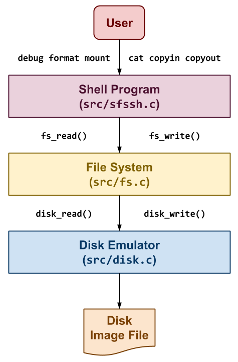

The last project is to build a simplified version of the Unix File System called SimpleFS as shown to the right. In this application, we have three components:
Shell: The first component is a simple shell application that allows
the user to perform operations on the SimpleFS such as printing
debugging information about the file system, formatting a new file system,
mounting a file system, creating files, and copying data in or out of the
file system. To do this, it will translate these user commands into file
system operations such as fs_debug, fs_format, fs_create,
fs_remove, fs_stat, fs_read, and fs_write.
File System: The second component takes the operations specified by
the user through the shell and performs them on the SimpleFS disk
image. This component is charged with organizing the on-disk data
structures and performing all the bookkeeping necessary to allow for
persistent storage of data. To store the data, it will need to interact
with the disk emulator via functions such as disk_read and
disk_write, which allow the file system read and write to the disk image
in 4096 byte blocks.
Disk Emulator: The third component emulates a disk by dividing a
normal file (called a disk image) into 4096 byte blocks and only
allows the File System to read and write in terms of blocks. This
emulator will persistently store the data to the disk image using the
normal open, read, and write system calls.
The shell component is provided to you. You will have to complete both the file system and disk emulator portion of the application for this project.
To implement the file system component, you will first need to
understand the SimpleFS disk layout. As noted previously, this project
assumes that each disk block is 4KB in size. The first block of the disk
is the superblock that describes the layout of the rest of the
filesystem. A certain number of blocks following the superblock contain
inode data structures (ie. the inode table). Typically, ten percent
of the total number of disk blocks are used as inode blocks (i.e.
blocks reserved for storing the inode table). The remaining blocks in
the filesystem are used as plain data blocks, and occasionally as
indirect pointer blocks as shown in the example below:
In this example, we have a SimpleFS disk image that begins with a superblock. This superblock consists of four fields:
Magic: The first field is always the MAGIC_NUMBER or 0xf0f03410.
The format routine places this number into the very first bytes of the
superblock as a sort of filesystem "signature". When the filesystem is
mounted, the OS looks for this magic number. If it is correct, then the
disk is assumed to contain a valid filesystem. If some other number is
present, then the mount fails, perhaps because the disk is not formatted or
contains some other kind of data.
Blocks: The second field is the total number of blocks, which should be the same as the number of blocks on the disk.
InodeBlocks: The third field is the number of blocks set aside for
storing inodes. The format routine is responsible for choosing this
value, which should always be 10% of the Blocks, rounding up.
Inodes: The fourth field is the total number of inodes in those inode blocks.
Note that the superblock data structure is quite small: only 16
bytes. The remainder of disk block zero is left unusued.
Each inode in SimpleFS looks like the file:
Each field of the inode is a 4-byte (32-bit) integer. The Valid
field is 1 if the inode is valid (i.e. has been created) and is 0
otherwise. The Size field contains the logical size of the inode
data in bytes. There are 5 direct pointers to data blocks, and one
pointer to an indirect data block. In this context, "pointer" simply
means the number of a block where data may be found. A value of 0 may be
used to indicate a null block pointer. Each inode occupies 32 bytes, so
there are 128 inodes in each 4KB inode block.
Note that an indirect data block is just a big array of pointers to
further data blocks. Each pointer is a 4-byte int, and each block is
4KB, so there are 1024 pointers per block. The data blocks are simply
4KB of raw data.
One thing missing in SimpleFS is the free block bitmap. As discussed in class, a real filesystem would keep a free block bitmap on disk, recording one bit for each block that was available or in use. This bitmap would be consulted and updated every time the filesystem needed to add or remove a data block from an inode.
Because SimpleFS does not store this on-disk, you are required to keep a free block bitmap in memory. That is, there must be an array of booleans, one for each block of the disk, noting whether the block is in use or available. When it is necessary to allocate a new block for a file, the system must scan through the array to locate an available block. When a block is freed, it likewise must be marked in the bitmap.
Suppose that the user makes some changes to a SimpleFS filesystem, and then reboots the system (ie. restarts the shell). Without a free block bitmap, SimpleFS cannot tell which blocks are in use and which are free. Fortunately, this information can be recovered by scanning the disk. Each time that an SimpleFS filesystem is mounted, the system must build a new free block bitmap from scratch by scanning through all of the inodes and recording which blocks are in use. (This is much like performing an fsck every time the system boots.)
SimpleFS looks much like the Unix file system. Each "file" is
identified by an integer called an inode number. The inode number
is simply an index into the array of inode structures that starts in
block 1. When a file is created, SimpleFS chooses the first available
inode and returns the corresponding inode number to the user. All
further references to that file are made using the inode number. Using
SimpleFS as a foundation, you could easily add another layer of
software that implements file and directory names. However, that will not
be part of this assignment.
More details about this project and your deliverables are described below.
While it may seem that file systems are a solved problem with venerable examples such as Ext4, XFS, and NTFS, the growth in big data and the emergence of SSDs as the primary storage medium has once again made file systems a hot topic. Today, we have next-generation file systems in the form of ZFS, Btrfs, and AppleFS, which build upon the foundation set by previous file systems. In this assignment, you will explore the core principles about file systems and how they work.
Note: This assignment is based heavily on Project 6: File Systems by Doug Thain.
As with previous projects, you are to work individually or in pairs
to create a library that implements the Disk and FileSystem
components described above by midnight on Thursday, December 12,
2024.
For this project, you must use C (not C++) as the implementation language. Any test scripts or auxillary tools can be written in any reasonable scripting language.
Here is a timeline of events related to this project:
| Date | Event |
|---|---|
| Monday, November 18 | Project description and repository are available. |
| Thursday, December 12 | File System due (pushed to GitHub project04 branch). |
For the final submission, please open a Pull Request on your repository
(for your project04 branch to the master branch) and assign it to the
instructor.
To start this project, you must create a Project 04 repository on GitHub using the following template:
Note: Do your work in a separate git branch that can be later merged
into the master branch (ie. make a project04 branch, DO NOT COMMIT
OR MERGE TO MASTER).
The Project 04 repository includes a README.md file with the following
sections:
Student: This should be your name and email address.
Demonstration: This should contain a link to a video of your demonstration of your implementation.
Errata: This should contain a description of any known errors or deficiencies in your implementation.
Acknowledgments: This should list anyone you collaborated with or received help from (including TAs, students, and AI tools).
You must complete this document report as part of your project.
As you can see, the base Project 04 repository contains a README.md
file and the following folder hierarchy:
project04
\_ Makefile # This is the project Makefile
\_ bin # This contains the application executables and test scripts
\_ data # This conatins the test Disk images
\_ include # This contains the SimpleFS library header files
\_ sfs
\_ disk.h # This contains the Disk Emulator header file
\_ fs.h # This contains the File System header file
\_ logging.h # This contains the Logging header file
\_ utils.h # This contains the Utilities header file
\_ src
\_ disk.c # This contains the Disk Emulator implementation code
\_ fs.c # This contains the File System implementation code
\_ sfssh.c # This contains the Shell implementation code
\_ tests # This contains the Unit Test implementation code
\_ unit_disk.c # This contains the Disk Unit Test implementation code
\_ unit_fs.c # This contains the File System Unit Test implementation code
You must maintain this folder structure for your project and place files in their appropriate place.
Note: Of the provided files, you are only required to modify the
src/disk.c and src/fs.c files as described below.
To help you get started, we have provided a Makefile with all the necessary
targets:
$ make # Build libraries, shell, and tests
Compiling src/disk.o
Compiling src/fs.o
Linking lib/libsfs.a
Compiling tests/unit_fs.o
Linking bin/unit_fs
Compiling tests/unit_disk.o
Linking bin/unit_disk
Compiling src/sfssh.o
Linking bin/sfssh
$ make clean # Remove all targets and intermediate files
Removing objects
Removing libraries
Removing programs
Removing tests
While the exact organization of the project code is up to you, keep in mind that you will be graded in part on coding style, cleaniness, and organization. This means your code should be consistently formatted, not contain any dead code, have reasonable comments, and appropriate naming among other things:
Break long functions into smaller functions.
Make sure each function does one thing and does it well.
Abstract, but don't over do it.
Please refer to these Coding Style slides for some tips and guidelines on coding style expectations.
As noted above, we must implement a simple disk emulator on which to
store your filesystem. This "disk" is actually stored as one big file in
the file system, so that you can save data in a disk image and then
retrieve it later. In addition, we provide you with some sample disk images
that you can experiment with to test your filesystem (in the data
directory). Just like a real disk, the emulator only allows operations on
entire disk blocks of 4KB (BLOCK_SIZE). You cannot read or write any
smaller unit than than that. The primary challenge of building a filesystem
is converting the user's requested operations on arbitrary amounts of data
into operations on fixed block sizes.
The interface to the simulated disk is given in include/sfs/disk.h:
/* Disk Structure */
typedef struct Disk Disk;
struct Disk {
int fd; /* File descriptor of disk image */
size_t blocks; /* Number of blocks in disk image */
size_t reads; /* Number of reads to disk image */
size_t writes; /* Number of writes to disk image */
};
/* Disk Functions */
Disk * disk_open(const char *path, size_t blocks);
void disk_close(Disk *disk);
ssize_t disk_read(Disk *disk, size_t block, char *data);
ssize_t disk_write(Disk *disk, size_t block, char *data);
Before performing any sort of operation on the disk, you must call
disk_open() method and specify a (real) disk image for storing the disk
data, and the number of blocks in the simulated disk. If this function is
called on a disk image that already exists, the contained data will not be
changed. When you are done using the disk, the disk_close must be called
to release the file.
Once the disk is open, you may check disk->blocks to discover the number
of blocks on the disk. As the names suggest, disk_read() and
disk_write() read and write one block of data on the disk. Notice that
the first argument is a block number, so a call to disk_read(disk, 0,
data) reads the first 4KB of data on the disk, and disk_read(disk, 1,
data) reads the next 4KB block of data on the disk. Every time that
you invoke a read or a write, you must ensure that data points to a full
4KB of memory.
To implement these operations, the disk_read and disk_write functions
internally utilize low-level I/O system calls such as lseek, read,
and write to operate on the file descriptor returned by open.
Note that the disk has a few programming conveniences that a real disk would not. A real disk is rather finicky -- if you send it invalid commands, it will likely crash the system or behave in other strange ways. This simulated disk is more "helpful." If you send it an invalid command, it will halt the program with an error message. For example, if you attempt to read or write a disk block that does not exist, it will throw an exception.
Building off the disk emulator described above, you will construct a
working file system. Take note that we have already constructed the
interface to the filesystem and provided some skeleton code. The interface
is given in include/sfs/fs.h:
/* File System Structure */
typedef struct FileSystem FileSystem;
struct FileSystem {
Disk *disk; /* Disk file system is mounted on */
bool *free_blocks; /* Free block bitmap */
SuperBlock meta_data; /* File system meta data */
};
/* File System Functions */
void fs_debug(Disk *disk);
bool fs_format(Disk *disk);
bool fs_mount(FileSystem *fs, Disk *disk);
void fs_unmount(FileSystem *fs);
ssize_t fs_create(FileSystem *fs);
bool fs_remove(FileSystem *fs, size_t inode_number);
ssize_t fs_stat(FileSystem *fs, size_t inode_number);
ssize_t fs_read(FileSystem *fs, size_t inode_number, char *data, size_t length, size_t offset);
ssize_t fs_write(FileSystem *fs, size_t inode_number, char *data, size_t length, size_t offset);
The various functions must work as follows:
A.
void fs_debug(Disk *disk)
This function scans a disk and reports on how the inodes and blocks are
organized. Your output from this method should be similar to the following:
$ ./bin/sfssh data/image.5 5
sfs> debug
SuperBlock:
magic number is valid
5 blocks
1 inode blocks
128 inodes
Inode 1:
size: 965 bytes
direct blocks: 2
Note, you must print out the information in the SuperBlock and the
information for all the valid inodes. Be sure to print out a list of
all the direct blocks used by the inode, along with any indirect
block (and any indirect blocks referenced by the indirect block).
For instance, in the example above, inode 1 has a file size of 965
bytes and has a direct block at location 2 of the underlying disk
device (ie. block 2).
B.
bool fs_format(FileSystem *fs, Disk *disk)
This function creates a new filesystem on the disk, destroying any data
already present. It should set aside ten percent of the blocks for
inodes, clear the inode table, and write the superblock. It must return
true on success, false otherwise.
Note: formatting a filesystem does not cause it to be mounted. Also, an attempt to format an already-mounted disk should do nothing and return failure.
C.
bool fs_mount(FileSystem *fs, Disk *disk)
This function examines the disk for a filesystem. If one is present, read
the superblock, build a free block bitmap, and prepare the filesystem for
use. Return true on success, false otherwise.
Note: a successful mount is a pre-requisite for the remaining calls.
D.
ssize_t fs_create(FileSystem *fs)
This function creates a new inode of zero length. On success, return
the inode number. On failure, return -1.
E.
bool fs_remove(FileSystem *fs, size_t inode_number)
This function removes the inode indicated by the inode_number. It
should release all data and indirect blocks assigned to this inode and
return them to the free block map. On success, it returns true. On
failure, it returns false.
F.
ssize_t fs_stat(FileSystem *fs, size_t inode_number)
This function returns the logical size of the given inode_number, in
bytes. Note that zero is a valid logical size for an inode. On
failure, it returns -1.
G.
ssize_t fs_read(FileSystem *fs, size_t inode_number, char *data, size_t length, size_t offset)
This function reads data from a valid inode. It then copies length
bytes from the data blocks of the inode into the data pointer,
starting at offset in the inode. It should return the total number
of bytes read. If the given inode_number is invalid, or any other error
is encountered, the method returns -1.
Note: The number of bytes actually read could be smaller than the number of bytes requested, perhaps if the end of the inode is reached.
H.
ssize_t fs_write(FileSytem *fs, size_t inode_number, char *data, size_t length, size_t offset)
This function writes data to a valid inode by copying length bytes
from the pointer data into the data blocks of the inode starting at
offset bytes. It will allocate any necessary direct and indirect blocks
in the process. Afterwards, it returns the number of bytes actually
written. If the given inode_number is invalid, or any other error is
encountered, return -1.
Note: The number of bytes actually written could be smaller than the number of bytes request, perhaps if the disk becomes full.
Your job is to implement SimpleFS as described above by filling in the
implementation of both src/disk.c and src/fs.c. You do
not need to change any other code modules. We have already created some
sample data structures to get you started. These can be found in
include/sfs/fs.h. To begin with, we have defined a number of common
constants that you will use. Most of these should be self explanatory:
#define MAGIC_NUMBER (0xf0f03410)
#define INODES_PER_BLOCK (128)
#define POINTERS_PER_INODE (5)
#define POINTERS_PER_BLOCK (1024)
Note that POINTERS_PER_INODE is the number of direct pointers in each
inode structure, while POINTERS_PER_BLOCK is the number of pointers to be
found in an indirect block.
The SuperBlock and Inode structures are easily translated from the pictures above:
typedef struct SuperBlock SuperBlock;
struct SuperBlock {
uint32_t magic_number; /* File system magic number */
uint32_t blocks; /* Number of blocks in file system */
uint32_t inode_blocks; /* Number of blocks reserved for inodes */
uint32_t inodes; /* Number of inodes in file system */
};
typedef struct Inode Inode;
struct Inode {
uint32_t valid; /* Whether or not inode is valid */
uint32_t size; /* Size of file */
uint32_t direct[POINTERS_PER_INODE]; /* Direct pointers */
uint32_t indirect; /* Indirect pointers */
};
Note carefully that many inodes can fit in one disk block. A 4KB chunk of
memory containing 128 inodes would look like this:
Inode Inodes[INODES_PER_BLOCK];
Each indirect block is just a big array of 1024 integers, each pointing
to another disk block. So, a 4KB chunk of memory corresponding to an
indirect block would look liks this:
uint32_t Pointers[POINTERS_PER_BLOCK];
Finally, each data block is just raw binary data used to store the partial
contents of a file. A data block can be specified as simply an array for
4096 bytes:
char Data[BLOCK_SIZE];
Because a raw 4KB disk block can be used to represent four different
kinds of data: a superblock, a block of 128 inodes, an indirect pointer
block, or a plain data block, we can declare a union of each of our four
different data types. A union looks like a struct, but forces all of its
elements to share the same memory space. You can think of a union as
several different types, all overlaid on top of each other:
typedef union Block Block;
union Block {
SuperBlock super; /* View block as superblock */
Inode inodes[INODES_PER_BLOCK]; /* View block as inode */
uint32_t pointers[POINTERS_PER_BLOCK]; /* View block as pointers */
char data[BLOCK_SIZE]; /* View block as data */
};
Note that the size of an Block union will be exactly 4KB: the size of
the largest members of the union. To declare a Block variable:
Block block;
Now, we may use disk_read() to load in the raw data from block zero. We
give disk_read() the variable block.data, which looks like an array of
characters:
disk_read(disk, 0, block.data);
But, we may interpret that data as if it were a SuperBlock structure by
accessing the super part of the union. For example, to extract the magic
number of the super block, we might do this:
x = block.super.magic_number;
On the other hand, suppose that we wanted to load disk block 59, assume
that it is an indirect block, and then examine the 4th pointer. Again, we
would use disk_read() to load the raw data:
disk_read(disk, 59, block.data);
But then use the pointers part of the union like so:
x = block.pointers[3];
The union offers a convenient way of viewing the same data from multiple
perspectives. When we load data from the disk, it is just a 4KB raw
chunk of data (block.data). But, once loaded, the filesystem layer knows
that this data has some structure. The filesystem layer can view the same
data from another perspective by choosing another field in the union.
Implement the functions roughly in order. We have deliberately
presented the functions of the filesystem interface in order to difficulty.
Implement debug, format, and mount first. Make sure that you are able
to access the sample disk images provided. Then, perform creation and
deletion of inodes without worrying about data blocks. Implement reading
and test again with disk images. If everything else is working, then
attempt write.
Divide and conquer. Work hard to factor out common actions into simple functions. This will dramatically simplify your code. For example, you will often need to load and save individual inode structures by number. This involves a fiddly little computation to transform an inumber into a block number, and so forth. So, make two little methods to do just that:
bool fs_load_inode(FileSystem *fs, size_t inode_number, Inode *node);
bool fs_save_inode(FileSystem *fs, size_t inode_number, Inode *node);
Now, everywhere that you need to load or save an inode structure, call these functions.
You may also wish to have functions that help you manage and search the free block map:
void fs_initialize_free_block_bitmap(FileSystem *fs);
ssize_t fs_allocate_free_block(FileSystem *fs);
Anytime that find yourself writing very similar code over and over again, factor it out into a smaller function.
Test boundary conditions. We will certainly test your code by
probing its boundaries. Make sure that you test and fix boundary conditions
before handing in. For example, what happens if fs_create discovers that
the inode table is full? It should cleanly return with an error code. It
certainly should not crash the program or mangle the disk! Think
critically about other possible boundary conditions such as the end of a
file or a full disk.
Don't worry about performance. You will be graded on correctness, not performance. In fact, during the course of this assignment, you will discover that a simple file access can easily erupt into tens or hundreds of single disk accesses. Understand why this happens, but don't worry about optimization.
We have provided for you a simple shell that will be used to exercise your
filesystem and the simulated disk. When grading your work, we will use the
shell to test your code, so be sure to test extensively. To use the shell,
simply run bin/sfssh with the name of a disk image, and the number of
blocks in that image. For example, to use the image.5 example given
below, run:
$ ./bin/sfssh data/image.5 5
Or, to start with a fresh new disk image, just give a new filename and number of blocks:
$ ./bin/sfssh newdisk 25
Once the shell starts, you can use the help command to list the available
commands:
sfs> help
Commands are:
format
mount
debug
create
remove <inode>
cat <inode>
stat <inode>
copyin <file> <inode>
copyout <inode> <file>
help
quit
exit
Most of the commands correspond closely to the filesystem interface. For
example, format, mount, debug, create and remove call the
corresponding methods in the FileSystem class. Make sure that you call
these functions in a sensible order. A filesystem must be formatted once
before it can be used. Likewise, it must be mounted before being read or
written.
The complex commands are cat, copyin, and copyout. cat reads an
entire file out of the filesystem and displays it on the console, just like
the Unix command of the same name. copyin and copyout copy a file from
the local Unix file system into your emulated filesystem. For example, to
copy the dictionary file into inode 10 in your filesystem, do the
following:
sfs> copyin /usr/share/dict/words 10
Note that these three commands work by making a large number of calls to
fs_read() and fs_write() for each file to be copied.
To help you verify the correctness of your SimpleFS implementation, you are provided with the following disk images:
Likewise, you are also provided a set of unit tests in the src/tests
directory that will test most of the basic functions in the Disk and
FileSystem structures:
$ make test-units # Run all unit tests
Running unit_disk 0
Running unit_disk 1
Running unit_disk 2
Running unit_fs 0
Running unit_fs 1
Running unit_fs 2
Running unit_fs 3
$ ./bin/unit_fs 0 # Run specific test from FileSystem unit test
DEBUG tests/unit_fs.c:23:test_00_fs_mount: Check mounting filesystem
DEBUG tests/unit_fs.c:34:test_00_fs_mount: Check mounting filesystem (already mounted)
2 disk block reads
0 disk block writes
DEBUG tests/unit_fs.c:43:test_00_fs_mount: Check mounting filesystem
DEBUG tests/unit_fs.c:69:test_00_fs_mount: Check mounting filesystem (already mounted)
4 disk block reads
0 disk block writes
Note: The FileSystem unit test does not check the behavior of the
fs_read and fs_write functions.
Additionally, we also provide an extensive suite of test scripts in the
bin directory that will utilize these disk images to test your file
system. You can run all the tests by simply doing make test:
$ make test-shell
Testing debug ...
debug on data/image.5 ... Success
debug on data/image.20 ... Success
debug on data/image.200 ... Success
format on data/image.20.formatted ... Success
format on data/image.200.formatted ... Success
Testing mount ...
mount on data/image.5 ... Success
mount-mount on data/image.5 ... Success
mount-format on data/image.5 ... Success
bad-mount on /tmp/tmp.bdMLwnZMjD/image.5 ... Success
bad-mount on /tmp/tmp.bdMLwnZMjD/image.5 ... Success
bad-mount on /tmp/tmp.bdMLwnZMjD/image.5 ... Success
bad-mount on /tmp/tmp.bdMLwnZMjD/image.5 ... Success
bad-mount on /tmp/tmp.bdMLwnZMjD/image.5 ... Success
Testing stat ...
stat on data/image.5 ... Success
stat on data/image.20 ... Success
stat on data/image.200 ... Success
Testing create ...
create on data/image.5.create ... Success
Testing copyout ...
copyout on data/image.5 ... Success
copyout on data/image.20 ... Success
copyout on data/image.200 ... Success
Testing cat ...
cat on data/image.5 ... Success
cat on data/image.20 ... Success
Testing copyin ...
copyin on /tmp/tmp.TfojIJ7XFD/image.5 ... Success
copyin on /tmp/tmp.TfojIJ7XFD/image.20 ... Success
copyin on /tmp/tmp.TfojIJ7XFD/image.200 ... Success
Testing remove ...
remove on /tmp/tmp.7sutsOUIJ9/image.5 ... Success
remove on /tmp/tmp.7sutsOUIJ9/image.5 ... Success
remove on /tmp/tmp.7sutsOUIJ9/image.20 ... Success
Testing valgrind ...
valgrind on /tmp/tmp.3bgkkDFFXD/image.200 ... Success
Depending on how you implement the various functions, the number of disk reads and writes may not match. As long as you are not too far above the numbers in the test case, then you will be given credit.
The provided test scripts require that the provided disk images are in their original state. Therefore, if you make any modifications to them while developing and testing, you should make sure you restore them to their original state before attempting the tests. Since we are using git, you can simply do the following to retrieve the original version of a disk image:
$ git checkout data/image.5
To reflect on the project and the concepts involved, you will need to create a group video demonstration of your software artifact and complete an individual quiz (each member will submit their own answers to their own private assignments repository).
As part of your grade, your group will need to create a video that demonstrates and discusses the following:
Your library passing the automated tests.
Explain with visuals (ie. diagrams, graphics, code, etc.) what happens when a user does the following in the context of typical Unix file system:
int fd = open("path.txt", O_RDONLY);
char buffer[BUFSIZ];
while (read(fd, buffer, BUFSIZ) > 0) {
...
}
close(fd);
Be sure to describe what happens at the disk level and file system level and what structures are utilized by the operating system kernel.
Any errata, quirks, or unresolved issues in your project.
What you learned by doing this project.
The video should include narration to describe what is being presented and
should cover the requirements enumerated above. It should be no longer than
5 minutes.
Please upload the video to either YouTube or Google Drive and provide a
link to it in your README.md.
Once you have completed the project, answer the following Project 04 Quiz
questions individually in your own personal assignments repository on GitHub:
The results of the quiz should look like the following:
Checking project04 quiz ...
Q1 1.00
Q2 0.50
Q3 0.50
Q4 1.00
Score 3.00 / 3.00
Status Success
Each group member should do the quiz on their own and record their answers
in the project04 folder in their assignments GitHub repository.
Once you have committed your work and pushed it to GitHub, remember to create a pull request and assign it to the appropriate teaching assistant from the Reading 12 TA List.
Your project will be graded on the following metrics:
| Metric | Points |
|---|---|
Source Code
|
10.0
|
Reflection
|
5.00
|
To encourage you to work on the project regularly (rather than leaving it until the last second) and to practice performing incremental development, part of your grade will be based on whether or not you have regular and reasonably sized commits in your git log.
That is, you will lose a point if you commit everything at once near the project deadline.
In addition to meeting the functional requirements of the project (as described above), your program must not exhibit any memory leaks or invalid memory accesses as would be detected by Valgrind.
Additionally, because system calls can fail, your program must implement robust error handling and ensure your code checks the status of system calls when reasonable.
Moreover, you code must compile without any warnings (and -Wall must
be one of the CFLAGS).
{kind=link}